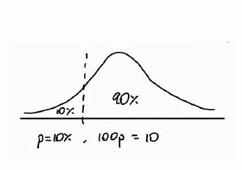
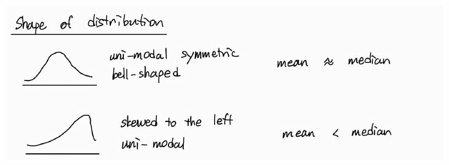
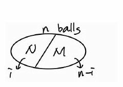
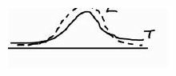
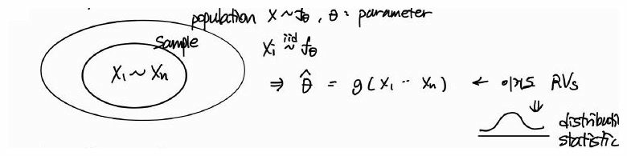
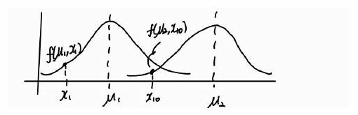
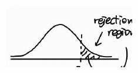
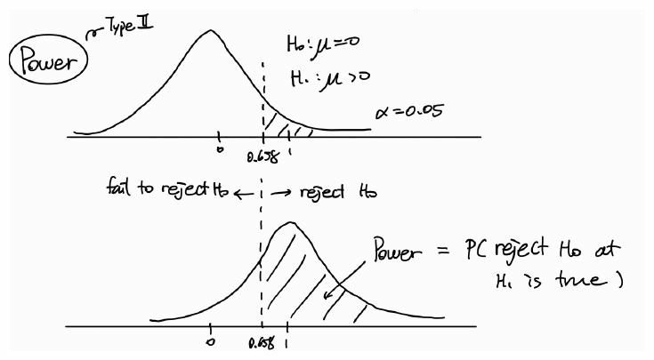

Parameter: a numerical measure depending on all units in the population; a characteristic of the population.
Statistic: a numerical measure depending only on the sampled units; a characteristic of the sample.
Def. (Population Percentiles / Quantiles)
The 100pth percentile is the location that indicates the percent of a distribution equal to or below 100p.
First quartile Q1: p=0.25; median Q2: p=0.5; third quartile Q3: p=0.75.
Interquartile range (IQR): Q3−Q1.

The sample median is more robust to outliers than the sample mean.
If the sample is sorted as x(1)≤⋯≤x(n):
- Odd n: sample median is the value at position (n+1)/2.
- Even n: sample median is the average of values at positions n/2 and n/2+1.
Def. (Sample100pth Percentile)
The sample 100pth percentile x~ of a dataset is a value with at least np observations ≤x~ and at least n(1−p) observations ≥x~.
If np is not an integer, use the next integer greater than np. If np is an integer, use the average of the values in the corresponding two positions.
Shape of a Distribution

- Unimodal, symmetric bell-shaped distribution: mean ≈ median.
- Unimodal distribution skewed to the left: mean < median.
Thm. (Chebyshev's Inequality: Sample Form)
For dataset x1,…,xn with sample mean xˉ and sample standard deviation s, let Sk={i:1≤i≤n,∣xi−xˉ∣<ks} and N(Sk) be the number of elements in Sk.
nN(Sk)≥1−nk2n−1>1−k21.
Let N(k) be the number of indices satisfying 1≤i≤n and xi−xˉ≥ks.
r=±1: linear relation. r≈0: weak linear relation; not necessarily independence.
Probability
Sample Space, Events, and Axioms
Def. (Sample Space and Event)
The sample space S of an experiment is the set of all possible outcomes of the experiment.
An event E⊆S occurs if the outcome of the experiment belongs to E.
The algebra of events
- Commutative: E∪F=F∪E, E∩F=F∩E.
- Associative: (E∪F)∪G=E∪(F∪G).
- Distributive: (E∪F)∩G=(E∩G)∪(F∩G).
- De Morgan: (E∪F)c=Ec∩Fc.
- EF:=E∩F.
Def. (Axioms of Probability)
0≤P(E)≤1.
P(S)=1.
For any mutually exclusive sequence {Ei}i=1∞,
P(i=1⋃∞Ei)=i=1∑∞P(Ei).
Prop. (Basic Probability Properties)
P(Ec)=1−P(E).
P(E∪F)=P(E)+P(F)−P(E∩F).
If all n elementary outcomes are equally likely, P({si})=1/n.
Combination notation: (kn)=n!/(k!(n−k)!).
Ex. Probability that n people have birthdays on different days (365 equally likely birthdays):
P(all birthdays distinct)=365n365Pn.
Conditional Probability and Bayes' Formula
Def. (Conditional Probability)
The probability of event E given that event F has occurred:
P(E∣F)=P(F)P(E∩F),P(F)>0.
Thm. (Bayes' Formula)
For mutually exclusive and exhaustive events F1,…,Fn,
P(Fi∣E)=∑j=1nP(E∣Fj)P(Fj)P(E∣Fi)P(Fi).
Also P(E∣F)=P(F∣E)P(E)/P(F) after rearrangement.
Def. (Independent Events)
E and F are independent if P(E∩F)=P(E)P(F).
Prop. (Independence)
If E and F are independent, so are E and Fc.
If E,F,G are independent, E is independent of every event formed from F and G (under mutual independence).
Proof (1)
P(E)=P(E∩F)+P(E∩Fc)=P(E)P(F)+P(E∩Fc).
Therefore P(E∩Fc)=P(E)(1−P(F))=P(E)P(Fc).
Ex. (Coupons)
A set of k coupons is collected, each of which is independently type j with probability pj, ∑j=1npj=1. Find the probability that the set contains a type j coupon given that it contains type i, i=j.
(Sol)Ai: the set of k coupons contains type i.
Goal:
P(Aj∣Ai)=P(Ai)P(Ai∩Aj).
P(Ai)=1−P(Aic)=1−P(no type i out of k coupons)=1−(1−pi)k.
nth moment of X: E[Xn] (n=1: mean; n=2: variance).
Ex. (Fixed placement). Let Xi=1 if the ith item is placed correctly, and 0 otherwise. Since X=∑i=1nXi and P(Xi=1)=1/n,
E[X]=i∑E[Xi]=i∑n1=1.
Ex. (Coupons). Among 20 types of coupons, 10 coupons are selected independently. Each type has probability 1/20. Let Xi indicate whether type i appears, and X=∑i=120Xi. Then
P(Xi=1)=1−(2019)10,E[X]=20[1−(2019)10]≈8.
The meaning of expectation. Predict X by a fixed value c. Squared error is (X−c)2. The value minimizing mean squared error E[(X−c)2] is c=E[X].
Variance, Covariance, Correlation
Def. (Variance)
Var(X)=E[(X−μ)2]=E[X2]−μ2,μ=E[X].
Var(aX+b)=a2Var(X).
Def. (Covariance and Correlation Coefficient)
Cov(X,Y)=E[(X−μX)(Y−μY)]=E[XY]−μXμY.
ρ=Corr(X,Y)=Var(X)Var(Y)Cov(X,Y).∣ρ∣≤1.
Prop. (Variance of a Sum)
Var(i=1∑nXi)=i=1∑nVar(Xi)+2i<j∑Cov(Xi,Xj).
Cov(X,Y)=0 for independent X,Y; converse need not hold.
The MGF uniquely determines the distribution (when it exists around zero).
Prop. (Markov's Inequality)
For a nonnegative X and a>0,
P(X≥a)≤aE[X].
Proof
E[X]=∫0∞xf(x)dx≥∫a∞xf(x)dx≥a∫a∞f(x)dx=aP(X≥a).
Prop. (Chebyshev's Inequality)
P(∣X−μ∣≥k)≤k2σ2=k2Var(X).
Thm. (Weak Law of Large Numbers)
Let X1,…,Xn be independent and identically distributed random variables with mean μ and variance σ2. Then for every ε>0,
P(nX1+⋯+Xn−μ>ε)→0(n→∞).
Thus the sample mean converges to the population mean in probability as sample size increases.
Special Random Variables
Discrete Random Variables
Bernoulli and Binomial
Def. (Bernoulli Random Variable)
P(X=0)=1−p,P(X=1)=p,X∼Bernoulli(p).
E[X]=p,Var(X)=p(1−p).
Def. (Binomial Random Variable)
X is the number of successes in n independent Bernoulli trials:
P(X=i)=(in)pi(1−p)n−i,X∼B(n,p).
X=i=1∑nXi,Xi∼Bernoulli(p),
E[X]=np,Var(X)=np(1−p).
P(X≤i)=k=0∑i(kn)pk(1−p)n−k.
For i≥0:
P(X=i+1)=(i+1)(1−p)(n−i)pP(X=i).
MGF of Bernoulli and Binomial
ϕBernoulli(t)=1−p+pet,ϕBinomial(t)=(1−p+pet)n.
Ex. If X∼B(n,p), Y∼B(m,p) are independent, then
ϕX+Y(t)=(1−p+pet)n+m⟹X+Y∼B(n+m,p).
By the uniqueness of MGFs, adding independent binomial variables with equal p gives another binomial variable.
Poisson
Def. (Poisson Random Variable)
P(X=i)=e−λi!λi,X∼Poisson(λ),i=0,1,2,…
∑i=0∞λi/i!=eλ.
ϕX(t)=eλ(et−1),E[X]=λ,Var(X)=λ.
Ex. (Accidents). The average number of accidents per week on a particular stretch of highway is 3. What is the probability of at least one accident this week?
As n→∞, the first ratio tends to 1, the numerator power tends to e−λ, and the final denominator tends to 1.
Prop. (Addition of Independent Poisson Variables)
If Xi∼Poisson(λi) are independent, then
X1+⋯+Xn∼Poisson(λ1+⋯+λn).
Ex. (Coupon type among Poisson events). Suppose N∼Poisson(λ) events occur, independently assigned type 1 with probability p and type 2 with probability 1−p. Given N=n+m, the number of type-1 events is B(n+m,p). Hence
P(N1=n,N2=m)=e−λ(n+m)!λn+m(nn+m)pn(1−p)m
=n!(λp)ne−λpm![λ(1−p)]me−λ(1−p).
Thus N1∼Poisson(λp), N2∼Poisson(λ(1−p)), and they are independent.
Prop. (Splitting a Poisson Distribution)
If each event of a Poisson variable with mean λ is independently classified as one of r types with probabilities p1,…,pr, the numbers of each type are independent Poisson random variables with means λp1,…,λpr.
P(X=i)P(X=i+1)=i+1λ.
Hypergeometric
Def. (Hypergeometric Random Variable)
Draw n balls without replacement from N balls, M of which are marked.
P(X=i)=(nN)(iM)(n−iN−M).
E[X]=NnM,Var(X)=nNM(1−NM)N−1N−n.
Sampling with replacement gives a binomial model; sampling without replacement gives a hypergeometric model.

Ex. If X∼B(n,p) and Y∼B(m,p) are independent, then
P(X=i∣X+Y=k)=P(X+Y=k)P(X=i)P(Y=k−i)
=(kn+m)(in)(k−im).
This has a hypergeometric distribution.
Continuous Random Variables
Uniform
Def. (Uniform Random Variable)
f(x)={β−α1,0,α≤x≤β,otherwise.
X∼U(α,β),P(a<X≤b)=β−αb−a,
E[X]=2α+β,Var(X)=12(β−α)2.
Normal
Def. (Normal Random Variable)
f(x)=2πσ1exp[−2σ2(x−μ)2],X∼N(μ,σ2).
ϕX(t)=exp(μt+2σ2t2),E[X]=μ,Var(X)=σ2.
If X∼N(μ,σ2),
Z=σX−μ∼N(0,1)
(standardization). The density is symmetric around μ.
Sum of independent normals. If Xi are normal and independent, then
i=1∑nXi∼N(i=1∑nμi,i=1∑nσi2).
Normal critical value.zα denotes a value satisfying P(Z>zα)=α, Z∼N(0,1).
N(t) counts events in [0,t], N(0)=0, and the rate is λ.
Numbers of events in disjoint time intervals are independent.
Distribution of the number of events in an interval depends only on its length (not its location).
For small h:
h→0limhP(N(h)=1)=λ,h→0limhP(N(h)≥2)=0.
Prop. (Poisson Count Distribution)
P(N(t)=k)=e−λtk!(λt)k,k=0,1,2,…
Sketch from notes. Split [0,t] into n subintervals. For small length t/n, a subinterval contains 1 event with approximate probability λt/n and 2 or more with negligible probability. Thus N(t) is approximately B(n,λt/n); as n→∞ this tends to Poisson(λt).
Ex. (Customers at a checkout counter)
Customers arrive at a checkout counter according to a Poisson distribution at an average of seven per hour (λ=7).
(a) During a given hour, what is the probability that no more than three customers arrive?
(b) During a given hour, what is the probability that at least two customers arrive?
(c) If it takes approximately ten minutes to serve each customer, find the mean and variance of total service time for customers arriving during a 1-hour period (assume sufficient servers). Is it likely the total service time will exceed 2.5 hours?
(d) What is the probability exactly two customers arrive during the continuous two-hour period from 2:00 P.M. to 4:00 P.M.? How about two separate one-hour periods, 1:00–2:00 P.M. and 3:00–4:00 P.M.?
(a)t=1:
(c)Y: total service time; X: number of customers, Y=10X.
E[Y]=70 minutes,Var(Y)=700 minutes2.
2.5 hours =150 minutes. So
P(Y>150)=P(10X>150)=P(X>15)
=1−P(X≤15)=1−i=0∑15e−7i!7i≈0.0024.
Thus not likely to occur.
(d) (1) For a continuous 2-hour period:
P(N(2)=2)=e−142142.
(d) (2) For two separated 1-hour periods, consider three cases:
- Case 1: first hour 2 customers; second hour 0 customers.
- Case 2: first hour 1 customer; second hour 1 customer.
- Case 3: first hour 0 customers; second hour 2 customers.
Independent gamma sums. If Xi∼Gamma(αi,λ) are independent, then
X1+⋯+Xn∼Gamma(i∑αi,λ).
Cor. For independent Xi∼Exp(λ),
i=1∑nXi∼Gamma(n,λ).
Chi-Square
Def. (Chi-Square Distribution)
If Z1,…,Zn are independent standard normal variables, then
X=i=1∑nZi2∼χn2,
where n is the number of degrees of freedom.
ϕZ2(t)=(1−2t)−1/2,ϕχn2(t)=(1−2t)−n/2.
Thus χn2∼Gamma(n/2,1/2) and
E[X]=n,Var(X)=2n.
f(x)=2n/2Γ(n/2)xn/2−1e−x/2,x>0.
Ex. For independent X1,X2∼N(0,22):
(2X1)2+(2X2)2∼χ22.
To find P(X12+X22>9), rewrite as P(χ22>9/4).
Student t
Def. (Student's t Distribution)
If Z∼N(0,1), V∼χn2 are independent, then
Tn=V/nZ∼tn.
E[Tn]=0 (when n>1), Var(Tn)=n/(n−2) for n>2.
For large n, tn approaches N(0,1).
P(Tn>tα,n)=α,t1−α,n=−tα,n.
F
Def. (F Distribution)
If U∼χn2, V∼χm2 are independent, then
Fn,m=V/mU/n∼Fn,m.
P(Fn,m>Fα,n,m)=α.
Reciprocal identity: Fα,m,n=1/F1−α,n,m.

Ex. For independent Xi∼N(μ,σ2), the standardized variables (X1−X2)/(2σ) and (X1+X2−2μ)/(2σ) are normal; their squares lead to independent chi-square variables, and their ratio has an F distribution.
Distributions of Sampling Statistics
Def. (Random Sample)
If X1,…,Xn are independent random variables having a common distribution F, they constitute a random sample from F.
Parameter inference: obtain information about an unknown population parameter (e.g., μ,σ2,p).
Nonparametric inference: inference not specified in terms of a particular parametric family.
An estimator is a function θ^=θ(X1,…,Xn) of the sample; therefore it is also a random variable and has its own sampling distribution.

Sample Mean and the Central Limit Theorem
Def. (Sample Mean)
For population mean μ and variance σ2, let
X=nX1+⋯+Xn.
Then
E[X]=μ,Var(X)=nσ2.
If Xi∼N(μ,σ2), then X∼N(μ,σ2/n).
Thm. (Central Limit Theorem)
Let X1,X2,… be i.i.d. random variables with mean μ and variance σ2. For large n,
P(σnX1+⋯+Xn−nμ≤x)→P(Z≤x),Z∼N(0,1).
Consequently,
X∼approxN(μ,nσ2).
Normal Approximation to Binomial and Continuity Correction
Prop. (Normal Approximation to Binomial)
When X∼B(n,p) and np and n(1−p) are sufficiently large (notes: about 5 or more),
X∼approxN(np,np(1−p)).
Use a continuity correction when approximating discrete binomial probabilities by a continuous normal distribution.
P(11≤X≤14)≈P(10.5≤Y≤14.5)
for the corresponding normal variable Y.
Sample Variance
Def. (Sample Variance)
S2=n−11i=1∑n(Xi−X)2.
(n−1)S2=i∑(Xi−X)2=i∑Xi2−nX2.
Prop. (Unbiased Sample Variance)
E[S2]=σ2.
Proof
E[(n−1)S2]=E[i∑Xi2−nX2]
=i∑(σ2+μ2)−n(nσ2+μ2)=(n−1)σ2.
Thm. (Sample Distribution from a Normal Population)
For X1,…,Xn∼N(μ,σ2) independent,
X∼N(μ,nσ2),σ2(n−1)S2∼χn−12.
Moreover, X and S2 are independent.
Proof sketch
By expanding the squared deviations,
i=1∑n(Xi−μ)2=i=1∑n(Xi−X)2+n(X−μ)2.
After dividing by σ2, the left side has χn2 and the second right-hand term has χ12. This leaves χn−12 for the residual sum of squares.
Cor. (Sample t Statistic)
If Xi is a random sample from N(μ,σ2), then
S/nX−μ∼tn−1.
Parameter Estimation
Def. (Point and Interval Estimates)
A point estimate assigns one value to an unknown parameter.
An interval estimate gives a range expected to contain the unknown parameter.
Likelihood and Maximum Likelihood Estimation
Def. (Likelihood Function)
Given observations x1,…,xn from f(x∣θ), the joint density or probability mass considered as a function of θ is the likelihood:
L(θ∣x1,…,xn)=i=1∏nf(xi∣θ).
It measures how likely the observed data are for each parameter value (with the data fixed).
Log-likelihood:
ℓ(θ)=logL(θ∣x1,…,xn)=i=1∑nlogf(xi∣θ).
Choose θ^ maximizing L or ℓ; usually solve ∂ℓ/∂θ=0 and check the maximum.

Ex. (Why the likelihood measures the "likelihood" of θ)Xi∼i.i.d.N(μ,σ2), σ2: known ⇒θ=μ.
Goal: estimate μ given (x1,…,xn).
μ1 is more likely than μ2: more data points are at the center.
How can we quantify this?
f(xi∣μ1): height of xi for μ1.
f(xi∣μ2): height of xi for μ2.
Under squared error loss, the Bayes estimator is the posterior mean:
E[θ∣X1=x1,…,Xn=xn]=∫θf(θ∣x1,…,xn)dθ.
Interval Estimates
Confidence Interval for a Normal Mean: Known Variance
For X1,…,Xn from a normal distribution with unknown μ and known σ2,
Z=σ/nX−μ∼N(0,1).
At 95% confidence,
P(−1.96<σ/nX−μ<1.96)=0.95.
Def. (Two-Sided Confidence Interval)
At 100(1−α)% confidence,
(X−zα/2nσ,X+zα/2nσ).
Example: α=0.05, zα/2=1.96.
Def. (One-Sided Confidence Intervals)
Upper:
(−∞,X+zαnσ).
Lower:
(X−zαnσ,+∞).
Confidence Interval for a Normal Mean: Unknown Variance
Thm. (Studentized Mean)
For a normal sample with unknown μ,σ2,
T=S/nX−μ∼tn−1.
P(−tα/2,n−1≤T≤tα/2,n−1)=1−α.
Def. (Confidence Interval forμ: Unknown Variance)
(X−tα/2,n−1nS,X+tα/2,n−1nS).
Prediction Interval
For a new independent observation Xn+1 from the same normal population, it is reasonable to use the current sample mean X as a predicted value. Because Xn+1 and X are independent,
Xn+1−X∼N(0,σ2(1+n1)),S1+1/nXn+1−X∼tn−1.
Def. (Prediction Interval)
At 100(1−α)%:
(X−tα/2,n−1S1+n1,X+tα/2,n−1S1+n1).
Confidence Interval for a Normal Variance
For a normal sample,
σ2(n−1)S2∼χn−12.
With upper-tail convention P(χν2>χα,ν2)=α, a two-sided confidence interval for σ2 is
Def. (Confidence Interval forσ2)
(χα/2,n−12(n−1)S2,χ1−α/2,n−12(n−1)S2).
Difference in Two Means
Let X1,…,Xn be sampled from N(μ1,σ12), and Y1,…,Ym independently from N(μ2,σ22).
Known variances
X−Y∼N(μ1−μ2,nσ12+mσ22).
Def. (CI for Difference of Means, Known Variances)
Approximate Confidence Interval for a Bernoulli Mean
If Xi∼Bernoulli(p) and p^=X,
p(1−p)/nX−p∼approxN(0,1).
Substitute p^ for unknown p in the standard error:
Def. (Approximate CI forp)
(p^−zα/2np^(1−p^),p^+zα/2np^(1−p^)).
Sample Size Determination
If desired interval length is no more than b for a Bernoulli proportion, the approximate interval length is
2zα/2np(1−p)≤b.
Unknown p: use a preliminary sample to estimate p (or p=1/2 for a conservative choice). Then
n≥b24zα/22p(1−p).
If a preliminary sample gives p^, substitute p^(1−p^); maximize at p=1/2.
Hypothesis Testing
Null Hypothesis, Alternative, and Errors
Def. (Statistical Hypotheses)
The null hypothesisH0 is what is to be tested, usually the negation of the assertion or effect under examination.
The alternative hypothesisH1 is the competing assertion.
A statistical test is a procedure for choosing whether to reject H0.
Hypotheses are expressed using population parameters, not sample statistics (which are observed quantities).
Def. (Critical / Rejection Region)
A critical (rejection) region C is a set of observations or test statistic values for which H0 is rejected.
Failure to reject H0 does not mean H0 is true; only that the data did not provide sufficient evidence against it.
Decision / Actual
H0 true
H1 true
Reject H0
Type I error (α)
Correct rejection
Fail to reject H0
Correct decision
Type II error (β)
Def. (Type I / II Error, Power, Significance)
Type I error (α): rejecting H0 when it is true.
Type II error (β): failing to reject H0 when it is false.
Power: P(reject H0∣H1 true)=1−β.
Significance level α: under H0, P(reject H0)≤α.

General steps of a test:
1. State H0,H1 (population parameters).
2. Set significance level α.
3. Fix test statistic (point estimator / test statistic).
4. Determine the critical region C and collect data.
5. Evaluate the test statistic.
6. Decide to reject or fail to reject H0 at α.
7. Interpret the decision.
Tests for a Normal Mean, Known Variance
For a normal random sample X1,…,Xn∼N(μ,σ2), σ known,
Z=σ/nX−μ0∼N(0,1)under H0:μ=μ0.
Thm. (One-Sided Z Test)
For H0:μ≤μ0 versus H1:μ>μ0:
Reject H0ifσ/nX−μ0>zα.
For H0:μ≥μ0 versus H1:μ<μ0:
Reject H0ifZ<−zα.
Thm. (Two-Sided Z Test)
For H0:μ=μ0 versus H1:μ=μ0,
Reject H0if∣Z∣>zα/2.
Otherwise fail to reject H0.
Def. (p-value)
The p-value is the smallest significance level at which the given data lead to rejection of H0.
If p-value <α, reject H0.
If p-value ≥α, fail to reject H0.
For right-tailed Z=z: p=P(Z≥z).
For two-sided Z=z: p=P(∣Z∣≥∣z∣).
Ex. (Two-sided Z test). Test H0:μ=8 versus H1:μ=8, with α=0.05. Using the observed standardized value z=1.68,
∣1.68∣<1.96⟹fail to reject H0.
Two-sided p-value P(∣Z∣≥1.68)≈0.093.
Relation to CIs. Failing to reject H0:μ=μ0 at significance α is equivalent to μ0 lying in the corresponding 100(1−α)% confidence interval.
Power and Sample Size

For one-sided H0:μ=μ0, H1:μ>μ0 with a true mean μ1>μ0:
This is an estimator of σ2regardless of whetherH0is true or not.
WhenH0is true:μ1=⋯=μm=μ.
σ/nXˉi⋅−μ∼N(0,1),i=1∑mσ2n(Xˉi⋅−μ)2∼χm2.
When H0 is true, estimator of μ is Xˉ⋅⋅.
σ2SSB=σ2n∑i=1m(Xˉi⋅−Xˉ⋅⋅)2∼χm−12.
Therefore E[SSB/(m−1)]=σ2 is a second estimator of σ2.
Also,
SSW=i∑j∑(Xij−Xˉi⋅)2=i∑(n−1)Si2,
where Si2 is the sample variance of the ith group.
When H0 is true,
σ2SSB∼χm−12,E[m−1SSB]=σ2.
Thm. (One-Way ANOVA F Test)
F=SSW/[m(n−1)]SSB/(m−1)∼Fm−1,m(n−1)(H0).
Reject H0 for sufficiently large F:
F>Fα,m−1,m(n−1).
Multiple Comparisons of Sample Means
When H0 of equal means is rejected, we are interested in a comparison of different sample means μ1,…,μm.
There are (2m) simultaneous tests: H0:μ1=μ2, …, H0:μm−1=μm.
Ex.m=3: test H0:μ1=μ2, H0:μ2=μ3, H0:μ1=μ3.
Assume that we conduct two independent tests.
αe: overall type I error.
αIi: individual type I error of test i.
αe=P(falsely reject test 1 or 2)=1−P(correctly not reject both tests)
=1−P(correctly not reject test 1)P(correctly not reject test 2)
=1−[1−P(αI1)][1−P(αI2)].
Let αI1=αI2=0.05, then αe≈0.0975.
3 tests: αe≈0.143. 4 tests: the overall error increases further.
ANOVA with Unequal Sample Sizes
Let group i contain ni observations, i=1,…,m, and total N=∑ini.
Def. (ANOVA Sums of Squares: Unequal Sizes)
SSW=i=1∑mj=1∑ni(Xij−Xi⋅)2,
X⋅⋅=N1i∑niXi⋅,SSB=i=1∑mni(Xi⋅−X⋅⋅)2.
For equal population variances,
σ2SSW∼χN−m2,σ2SSB∼χm−12under H0.
Thm. (ANOVA F Test: Unequal Sample Sizes)
F=SSW/(N−m)SSB/(m−1)∼Fm−1,N−m(H0).
Relation among tests
Question
Type / Procedure
Continuous response, categorical group
ANOVA, regression
Two group means
Two-sample t test
Difference or relation between quantitative variables
Regression / correlation
Chi-Square Tests for Categorical Data
Goodness-of-Fit Test
Def. (Goodness-of-Fit Test)
Test whether an assumed probability mechanism or model is appropriate for observed categorical data.
For random sample Y1,…,Yn taking values 1,…,k:
H0:P(Yi=j)=pj,j=1,…,k,
H1:P(Yi=j)=pjfor some j.
Observed frequency Xj is the number of Yi equal to j; expected frequency under H0 is npj.
T=j=1∑knpj(Xj−npj)2.
Under H0, T∼approxχk−12 for sufficiently large expected cell counts.